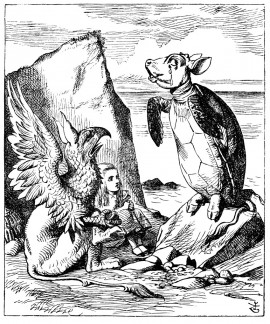

So they went up to the Mock Turtle, who looked at them with large eyes full of tears, but said nothing.
'This here young lady,' said the Gryphon, 'she wants for to know your history, she do.'
'I'll tell it her,' said the Mock Turtle in a deep, hollow tone: 'sit down, both of you, and don't speak a word till I've finished.'
So they sat down, and nobody spoke for some minutes. Alice thought to herself, 'I don't see how he can EVEN finish, if he doesn't begin.' But she waited patiently.
'Once,' said the Mock Turtle at last, with a deep sigh, 'I was a real Turtle.'
These words were followed by a very long silence, broken only by an occasional exclamation of 'Hjckrrh!' from the Gryphon, and the constant heavy sobbing of the Mock Turtle. Alice was very nearly getting up and
saying, 'Thank you, sir, for your interesting story,' but she could not help thinking there MUST be more to come, so she sat still and said nothing.
'When we were little,' the Mock Turtle went on at last, more calmly, though still sobbing a little now and then, 'we went to school in the sea. The master was an old Turtle--we used to call him Tortoise--'
'Why did you call him Tortoise, if he wasn't one?' Alice asked.
'We called him Tortoise because he taught us,' said the Mock Turtle angrily: 'really you are very dull!'
'You ought to be ashamed of yourself for asking such a simple question,' added the Gryphon; and then they both sat silent and looked at poor Alice, who felt ready to sink into the earth. At last the Gryphon said to the Mock Turtle, 'Drive on, old fellow! Don't be all day about it!' and he went on in these words:
'Yes, we went to school in the sea, though you mayn't believe it--'
'I never said I didn't!' interrupted Alice.
'You did,' said the Mock Turtle.
'Hold your tongue!' added the Gryphon, before Alice could speak again. The Mock Turtle went on.